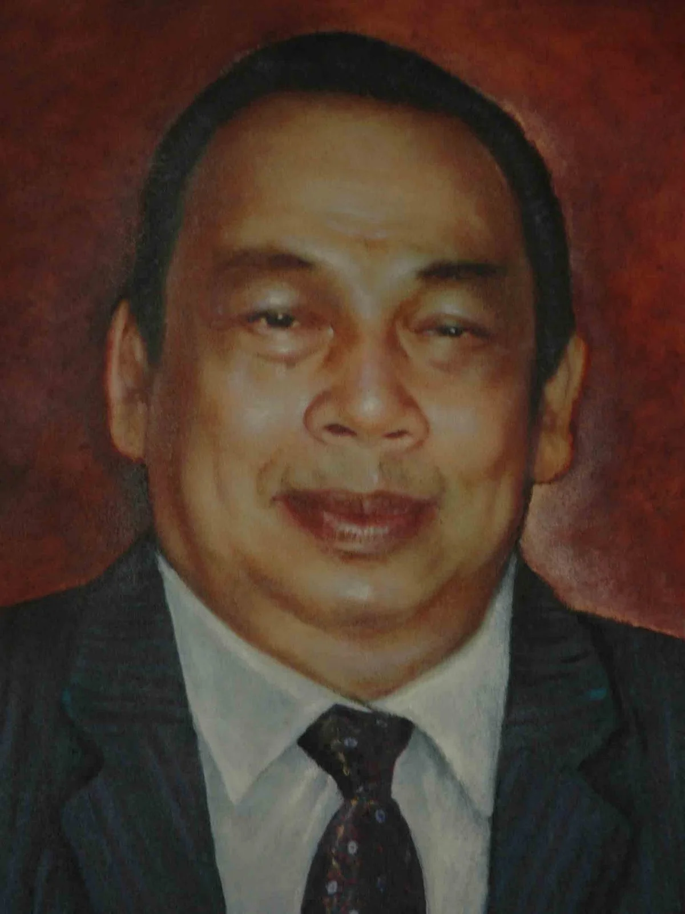

Mengenal fondasi Visi Misi, tokoh perintis, serta perjalanan panjang Lampung Post dari penyatuan media mingguan hingga menjadi institusi multiplatform tepercaya.
Arah dan landasan utama PT Masa Kini Mandiri (Lampung Post) dalam memberikan kontribusi nyata bagi masyarakat.
"Menjadi Media Multiplatform Terbesar dan Berpengaruh di Lampung."
Para pilar utama yang meletakkan batu pertama serta memperkuat jejaring Lampung Post hingga jangkauan nasional.

Pendiri Utama
Memprakarsai lahirnya Lampung Post pada 17 Juli 1974 dengan menghimpun tiga koran mingguan lokal demi membangun persuratkabaran yang independen dan profesional di Lampung.
Media Group Network
Bergabung pada tahun 1985. Kepemimpinan dan jaringan penerbitan harian Media Indonesia yang dimilikinya memperkuat posisi Lampung Post dalam pilar Media Group.
Rekam jejak dan transformasi hukum, kelembagaan, serta perkembangan Lampung Post dari waktu ke waktu.
Kala itu, tiga surat kabar mingguan terbit di Lampung: Poesiban, Independen, dan Post Ekonomi. Ketiganya belum memiliki percetakan sendiri dan manajemen profesional. Menindaklanjuti imbauan Menteri Penerangan RI, para pemimpin redaksi sepakat bersatu membentuk Lampung Post.
Lampung Post resmi terbit pertama kali berdasarkan SK MENPEN RI No: 0148 SK DIRJEN P 6 SIT 1974. Kantor redaksi berlokasi di Jalan Soekarno-Hatta No. 108, Rajabasa, Bandar Lampung.
Memenuhi Permenpen RI No. 01/Per/Menpen/1984 & SK Menpen No. 214/KEP/Menpen/1984 tentang SIUPP, dilakukan perubahan akta perseroan oleh Notaris Imran Ma'ruf, SH di Tanjung Karang pada 6 April 1986 (Akta No. 26). Kemudian disempurnakan menjadi PT Masa Kini Mandiri lewat Akta Notaris No. 144 tanggal 28 September 1985.
Harian Umum Lampung Post yang sebelumnya dikelola Badan Penerbit Yayasan Masa Kini resmi dialihkan ke perseroan PT Masa Kini Mandiri dengan Surat Izin Usaha Penerbitan (SIUP) nomor 150/SK/Men Pen/SIUP/a 7/1986.
Radio SAI resmi bekerja sama dengan Lampung Post, memperluas jangkauan siaran audio-broadcast interaktif serta memperkuat ekosistem konvergensi media multiplatform.
PT Masa Kini Mandiri bertransformasi penuh menghadirkan portal berita Lampost.co, Lampung Post Update (YouTube), Radio SAI 100FM, E-Paper, Publishing, dan Event Organizer profesional.